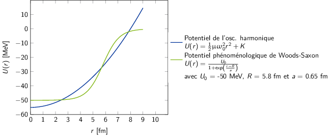
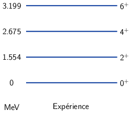
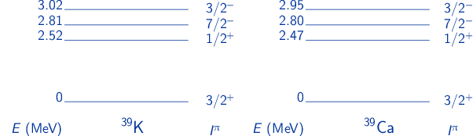
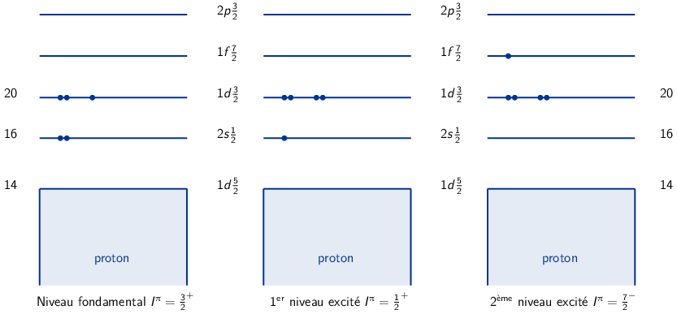
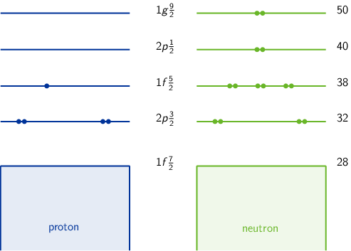
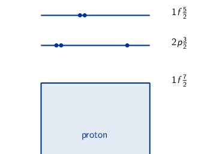
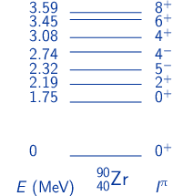
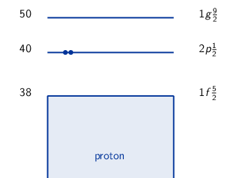
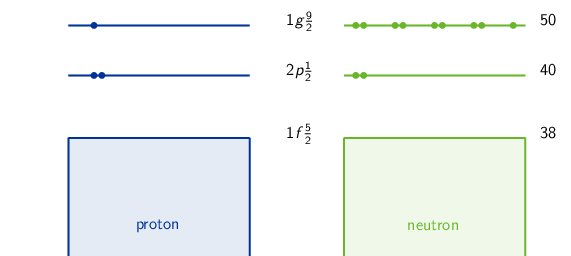
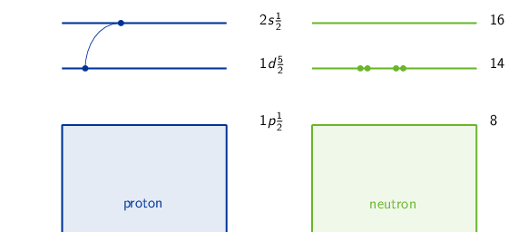

TD8 : Structure nucléaire
1 Introduction
Noyau : AZX → Z protons + N neutrons = A nucléons (nombre de masse)
- Noyau ayant le "même" nombre de protons Z sont appelés des isotopes tandis que ceux présentant le même nombre de nucléons A sont des isobares
- Noyau ≡ objet quantique
- une fonction d'onde décrit les propriétés du noyau
- les nombres quantiques associés : spin, parité, isospin
- il possède un état fondamental et des états excités
- chaque état possède un moment électronique et un moment magnétique
Certains noyaux sont stables, d'autres radioactifs se désintégrant spontanément
\begin{align*} ^{14}_{6}\text{C} \rightarrow\,^{14}_{7}\text{N} + e^{-} + \bar{\nu}_{e} \end{align*}Pour étudier le noyau, on forme des réactions nucléaires qui obéissent à des lois de conservation (charge, nombre de nucléons, parité…). On bombarde une cible avec ≠ projectiles (γ, e-, n, p, ions lourds), à ≠ énergies. Ces réactions sont possibles avec ≠ probabilités (section efficace). On peut étudier chaque réaction dont les états finaux peuvent différer et déterminer la variation de la section efficace en fonction de l'énergie incident (fonction d'excitation) ou en fonction de l'angle de sortie (distribution angulaire).
Rayon des noyaux : En 1909, Hans Geiger et Ernest Marsden sous la direction d'Ernest Rutherford, mettent en évidence le noyau atomique en étudiant la diffusion de particules α sur des atomes d'or (Au). Antérieurement à cette expérience, la matière était conçue sous la forme d'atome contenant deux parties de charge électrique opposée. L'expérience de Rutherford montra qu'en réalité le noyau chargé positivement est de taille très petite devant le nuage électronique qui l'entoure, chargé négativement.
En supposant que le noyau soit une sphère uniformément chargée en volume et contenant \(A\) nucléons
\begin{align*} V = \frac{4}{3}\pi\,R^{3} \propto A \end{align*}On déduit que le rayon d'un noyau est proportionnel à son nombre de nucléons \(R = r_{0} \times A^{1/3}\). Expérimentalement, \(r_{0}\) est compris entre 1.2 et 1.5 fermi où 1 fm = 10-15 m = 10-13 cm. La valeur la plus probable est \(r_{0}\) = 1.25 fm.
2 Ordres de grandeurs
Calculer le volume (en cm3) et la masse volumique (en g/cm3) d'un noyau de 126C, qui est le noyau utilisé pour définir l'unité de masse atomique. Comparer à la masse volumique des matériaux courants comme le bois ou le fer.
Volume du noyau de 126C : approx. sphérique
\begin{align*} V = \frac{4}{3}\pi\,R^{3} &= \frac{4}{3}\pi\,(r_{0}\,A^{1/3})^3 \\ V(^{12}_{6}\text{C})&= \frac{4}{3}\pi\,(1.25\times12^{1/3})^3 \\ &\simeq \unit[100]{fm}^3 = \unit[10^{-37}]{cm}^3 \end{align*}Masse volumique 126C → noyau particulier à partir duquel est défini l'unité de masse atomique
\begin{align*} \unit[1]{u.m.a} = \frac{\text{masse}(^{12}_{6}\text{C})}{12} = \unit[931.5]{MeV/c}^{2} \end{align*}
d'où
\begin{align*} m(^{12}_{6}\text{C})c^2 &= 12\times\unit[931.5]{MeV} = 12\times931.5\times10^6\times\unit[1.6\,10^{-19}]{J} \\ m(^{12}_{6}\text{C}) &= \frac{12\times931.5\times1.6\,10^{-19}}{(3\,10^8)^2} = \unit[2\,10^{-26}]{kg} = \unit[2\,10^{-23}]{g}\\ \end{align*}On en déduit que la masse volumique est égale à
\begin{align*} \rho(^{12}_{6}\text{C}) = \frac{m(^{12}_{6}\text{C})}{V(^{12}_{6}\text{C})} = \frac{2\,10^{-23}}{10^{-37}} = \unit[2\,10^{14}]{g/cm}^3 \end{align*}À titre de comparaison, le bois a une densité moyenne de 0.6 – 1 g/cm3, le fer environ 10 g/cm3, la Terre de 6 g/cm3 et l'Uranium de 19 g/cm3.
Remarques : la densité au sein d'une étoile à neutrons est voisine de 1011 g/cm3
3 Modèle en couche
3.1 Introduction
Dans l'approximation du champ moyen, l'hamiltonien d'un système à \(N\) nucléons prend la forme suivante
\begin{equation*} \hat{H}_\text{CM}=\hat{H}_\text{OH} - D\hat{\ell}^2 - a\vv{\ell}.\vv{s} \end{equation*}où \(\hat{H}_{\text{OH}}\) est l'hamiltonien de l'oscillateur harmonique. \(D\hat{\ell}^2\) traduit les effets de bord observés expérimentalement à savoir que les nucléons à la surface du noyau soit ceux ayant un plus grand moment orbital \(\ell\) sont moins liés. Le potentiel moyen nucléaire est ainsi plus diffus sur les bords comme l'illustre la figure 1. Le terme \(a\vv{\ell}.\vv{s}\) est relatif au couplage spin-orbite.

Figure 1: Comparaison des potentiels de l'oscillateur harmonique et de la paramétrisation phénoménologique de Woods-Saxon.
On adopte, par ailleurs, les notations héritées de la spectroscopie atomique/moléculaire (cf. Table 1) où \(n\) correspond au nombre quantique radial i.e. au nombre de n\oe uds de la fonction d'onde, \(\ell\) est le nombre quantique associé au moment cinétique orbital et \(j\) celui associé au moment cinétique total \(J\) 1 soit \(\vv{j}=\vv{\ell}+\vv{s}\). Les nucléons étant des fermions \(s=\pm1/2\), le moment cinétique total devient \(\vv{j}=\vv{\ell}+\vv{1}/2\). La parité orbitale de l'état est égale à \(\pi=(-1)^\ell\) soit la parité intrinsèque.
| \(n\) | 1 | 2 | 3 | … | ||
| \(\ell\) | 0 | 1 | 2 | 3 | 4 | 5 |
| \(s\) | \(p\) | \(d\) | \(f\) | \(g\) | \(h\) |
Le principe de Pauli impose un nombre \(2j+1\) de particules identiques par couche \(j\). Par ailleurs, si on couple deux nucléons identiques dans une même couche (cas des noyaux pair-pair, par exemple), seules les valeurs paires de \(I\) (moment cinétique total) sont possibles (cf. Chapitre 4, page 14 du cours). On en déduit les règles d'appariement à savoir que deux nucléons identiques sur une même couche vont s'apparier de telle sorte que le moment cinétique soit \(I^\pi=0^+\) 2. On distingue également les règles suivantes pour les différents types de noyau :
la parité est égale à \((-1)^{\ell_1+\ell_2}\) où \(\ell_1=\ell_2=\ell\) et donc \(\pi=(-1)^{2\ell}=+1\)
- noyau pair-pair
- ces noyaux ne contiennent que des nucléons appariés dont le niveau fondamental correspond à \(I^\pi=0^+\). Les niveaux excités sont alors \(2^+,4^+\),…, les valeurs impaires de \(I\) étant interdites
- noyau pair-impair
- ces noyaux ont un nucléon célibataire sur une couche \((j,\ell)\), les autres nucléons appariés ont un moment cinétique total nul. Le nucléon célibataire gouverne donc la valeur de \(I^\pi\) : \(I=j, \pi=(-1)^\ell\)
- noyau impair-impair
- les nucléons célibataires, 1 proton et 1 neutron, se couplent de telle sorte que la valeur de \(j\) est comprise entre \(|j_1-j_2|\leq j\leq j_1+j_2\). La parité \(\pi\) est égale à \((-1)^{\ell_1+\ell_2}\). Toutes les valeurs de \(j\) sont possibles
On trouvera en annexe la séquence des couches donnée par le modèle.
Dans le cadre du modèle en couche, quel moment cinétique I et quelle parité π peut-on attribuer à l'état fondamental et au 1er état excité des noyaux suivants?
4121Sc, 5728Ni, 5827Co, 5022Ti
- Moment cinétique \(I\) et parité \(\pi\) :
4121Sc
- noyau impair-pair : 21 protons, 20 neutrons
- noyau fermé en neutrons (20 : nombre magique)
- 1 proton célibataire en \(1f\tfrac{7}{2}\) qui gouverne la valeur de \(I^\pi\)
- Niveau fondamental : \((n\ell j)=(1f\tfrac{7}{2})\) : \(I^\pi=\tfrac{7}{2}^{(-1)^3}=\tfrac{7}{2}^-\)
- 1er niveau excité : proton en \(2p\tfrac{3}{2}\) soit \(I^\pi=\tfrac{3}{2}^{(-1)^1}=\tfrac{3}{2}^-\)

5728Ni
- noyau pair-impair : 28 protons, 29 neutrons
- noyau fermé en protons (28 : nombre magique)
- 1 neutron célibataire en \(2p\tfrac{3}{2}\)
- Niveau fondamental : \(2p\tfrac{3}{2}\) : \(I^\pi=\tfrac{3}{2}^{(-1)^1}=\tfrac{3}{2}^-\)
- 1er niveau excité : neutron en \(1f\tfrac{5}{2}\) soit \(I^\pi=\tfrac{5}{2}^{(-1)^3}=\tfrac{5}{2}^-\)

5827Co
- noyau impair-impair : 27 protons, 31 neutrons → couplage des nucléons célibataires

- 1 proton célibataire en \(1f\tfrac{7}{2}\) et 1 neutron célibataire en \(2p\tfrac{3}{2}\)
- \(|j_1-j_2|\leq j\leq j_1+j_2\) → \(I=2,3,4,5\)
- \(\pi=(-1)^{\ell_1+\ell_2}=(-1)^{3+1}=+1\)
- le modèle ne donne pas l'ordre des états : le niveau fondamental est parmi ces 4 états de même que le 1er niveau excité.

Figure 5: Mesure expérimentale des niveaux en énergie du 5827Co. Les états sont dans le désordre mais très proches en énergie (effet de l'interaction résiduelle proton-neutron)
5022Ti
- noyau pair-pair : 22 protons, 28 neutrons
- noyau fermé en neutrons (28 : nombre magique)
- 2 protons sur la couche \(1f\tfrac{7}{2}\) → couplage des protons

- \(|j_1-j_2|\leq j\leq j_1+j_2\) → \(I=0,1,2,3,4,5,6,7\) mais seules les valeurs paires sont autorisées (principe de Pauli)
- \(\pi=(-1)^{\ell_1+\ell_2}=(-1)^{3+3}=+1\)
- Niveau fondamental : \(I^\pi=0^+\)
- 1er niveau excité = \(I^\pi=2^+\)

Figure 7: Mesure expérimentale des niveaux en énergie du 5022Ti. Les états d'énergie sont dans l'ordre (noyau pair-pair) mais très espacés en raison de l'interaction proton-proton → noyau pair-pair très stable
On donne les premiers niveaux des noyaux 3919K et 3920Ca, avec pour chacun d'eux \(I^\pi\) et l'énergie d'excitation \(E\) (en MeV). Interpréter ces moments cinétiques et parités dans le cadre du modèle en couche. Que reflète la grande similitude entre les deux spectres ?

3919K20 et 3920Ca19 → noyaux miroirs. Dans le cadre du modèle en couche, ces deux noyaux sont identiques (\(p\) et \(n\) sont "interchangeables" en raison de l'indépendance de charge de l'interaction forte).
3919K
- noyau impair-pair : 19 protons, 20 neutrons
- noyau fermé en neutrons (20 : nombre magique)
- 1 proton célibataire en \(1d\tfrac{3}{2}\)
- Niveau fondamental : \(I=\tfrac{3}{2}^{(-1)^2}=\tfrac{3}{2}^+\) en accord avec l'expérience

Figure 9: Niveaux excités du 3919K. Le 1er niveau excité résulte de la brisure de paire en \(2s\tfrac{1}{2}\) pour fermer la couche "magique" \(N=20\). Les niveaux excités suivants sont issus du "déplacement" du proton célibataire \(2s\tfrac{1}{2}\rightarrow1f\tfrac{7}{2}\rightarrow2p\tfrac{3}{2}\).
- 3920Ca : même raisonnement que pour 3919K mais en utilisant les neutrons (couche fermée en proton) → même séquence d'état et mêmes valeurs de \(I^\pi\).
Étant donné l'indépendance de charge de l'interaction forte, les noyaux miroirs, dont les états appartiennent aux mêmes multiplets d'isospin, ont les mêmes séquences de niveaux et les mêmes écarts en énergie \(\Delta E\) entre ces niveaux aux effets coulombiens près.
- L'état fondamental du noyau 7533As est un état \(I^{\pi} = \frac{3}{2}^-\). Expliquer ce résultat, non conforme au modèle en couches.
Noyau 7533As : 33 protons, 42 neutrons

1 proton célibataire en \(1f\tfrac{5}{2}\) → niveau fondamental \(I^\pi=\tfrac{5}{2}^-\). Expérimentalement, le niveau fondamental est \(I^\pi=\tfrac{3}{2}^-\) → 75As est un noyau impair pour lequel l'ordre de remplissage des couches diffère de celui attendu

Cette configuration, 1 proton célibataire en \(2p\tfrac{3}{2}\), est "préférée" par le noyau car l'énergie d'appariement croît avec le \(j\) de la couche (ici \(\tfrac{5}{2}\) contre \(\tfrac{3}{2}\)) ce qui rend le noyau plus stable. De plus, les couches sont proches en énergie et un noyau déformé peut "mélanger" les différentes couches.
On donne ci-dessous le spectre des 8 premiers niveaux du noyau 9040Zr.

Chercher à expliquer ce spectre en supposant que le noyau de 9040Zr est composé d'un coeur inerte de 8838Sr et de deux protons.
9040Zr = 8838Sr + 2\(p\) : noyau pair-pair fermé en neutrons (50 : nombre magique)

- 2 protons appariés en \(2p\tfrac{1}{2}\) d'où \(I^\pi=0^+\).
- 2 protons en \(1g\tfrac{9}{2}\) → couplage \(I^\pi=0^+,1^+,2^+,3^+,4^+,5^+,6^+,7^+,8^+,9^+\) mais seules les valeurs paires sont conservées (principe de Pauli) d'où \(I^\pi=0^+,2^+,4^+,6^+,8^+\) avec un ordre parmi les niveaux en énergie respecté.
- brisure de paire : 1 proton en \(2p\tfrac{1}{2}\) et 1 proton en \(1g\tfrac{9}{2}\) : \(I^\pi=4^-,5^-\), ordre non donné par le modèle en couche
Le modèle explique correctement le spectre en énergie. On remarque par ailleurs, l'écart en énergie important entre le niveau fondamental et le premier niveau excité (\(E=\unit[1.75]{MeV}\)) : c'est une caractéristique des noyaux pair-pair qui sont très stables et donc difficilement "excitable".
On considère les 12 premiers niveaux du noyau 9041Nb.

- Expliquer ce spectre.
- Que peut-on dire de la grande différence entre les densités de niveau des deux noyaux 9040Zr et 9041Nb et entre les intéractions résiduelles proton-proton et proton-neutron ?
9041Nb : le noyau de Niobium est un noyau impair-impair : 41 protons, 49 neutrons

- 1 proton célibataire en \(1g\tfrac{9}{2}\) et 1 neutron célibataire en \(1g\tfrac{9}{2}\) → couplage \(I^\pi=0^+,1^+,2^+,3^+,4^+,5^+,6^+,7^+,8^+,9^+\) où les 10 valeurs sont toutes possibles
- pour un noyau impair-impair, l'ordre n'est pas donné par le modèle
- Brisure de la paire \(2p\tfrac{1}{2}\) dont l'un des constituants (proton ou neutron) "monte" en \(1g\tfrac{9}{2}\). Cette brisure est d'autant plus favorisée que la montée d'un neutron ferme la couche de nombre magique 50. Dans ce cas, on obtient un proton ou un neutron célibataire en \(2p\tfrac{1}{2}\) et un neutron ou un proton célibataire en \(1g\tfrac{9}{2}\) : \(I^\pi=4^-,5^-\)
- le nombre de niveaux observé est moins élevé pour le noyau pair-pair 9040Zr que pour le noyaux impair-impair 9041Nb du fait du principe de Pauli qui interdit certaines valeurs de \(I\) pour les noyaux pair-pair.
- la levée de dégénérescence due à l'interaction résiduelle c'est-à-dire au traitement des interactions entre nucléons \(\hat{H}=\hat{H}_{\text{CM}}+\hat{V}_{\text{res.}}\) : l'interaction résiduelle entre \(p-p\) est plus importante qu'entre \(p-n\) expliquant l'écart d'énergie \(\Delta E\) entre les niveaux excités : 3.6 MeV pour 9040Zr et 0.85 MeV pour 9041Nb
4 Réactions nucléaires et états analogues isobariques
Étude des isobares 219F, 2110Ne et 2111Na
On considère les trois isobares 219F, 2110Ne et 2111Na.
- Donner les moment cinétique et parité I\(^{\pi}\), ainsi que les configurations de l'état fondamental et du premier état excité prévus par le modèle en couche, pour le noyau 219F.
- On donne \(I^{\pi} = \frac{3}{2}^+\) pour l'état fondamental des noyaux 2110Ne et 2111Na. Commenter ce résultat non conforme au modèle en couche.
Moment cinétique \(I^\pi\) du 219F

Figure 16: États excités du 219F
État fondamental \((1d\tfrac{5}{2})^1\) soit \(I^\pi=\tfrac{5}{2}^+\), 1er niveau excité \((2s\tfrac{1}{2})^1\) soit \(I^\pi=\tfrac{1}{2}^+\).
Noyaux miroirs 2110Ne et 2111Na : même séquence de \(I^\pi\)

Figure 17: Structure en couche du 2110Ne
Selon le modèle en couche, le niveau fondamental devrait être \(I^\pi=\tfrac{5}{2}^+\). Le fait que le niveau fondamental soit finalement \(I^\pi=\tfrac{3}{2}^+\) semble indiquer que le neutron seul dans le cas du 2110Ne (respectivement le proton seul dans le cas du 2111Na) est monté sur la couche \(1d\tfrac{3}{2}\). Une telle situation est envisageable dès lors que le noyau est déformé et dans la mesure où les niveaux en énergie des couches \(1d\tfrac{5}{2},2s\tfrac{1}{2}\) et \(1d\tfrac{3}{2}\) sont relativement proches.
- Quelle est la valeur de la troisième composante de l'isospin \(T_3\) pour ces trois noyaux ? En déduire la valeur de l'isospin \(T\) de leur état fondamental.
- Dans le cadre de l'indépendance de charge de l'interaction forte, discuter ce résultat en termes de multiplets d'isospin. Quel(s) autre(s) noyau(x) isobarique(s) appartienne(nt) à ce(s) multiplet(s) ? Peut-on prévoir le spin et la parité de l'état fondamental et du premier état excité de ce(s) noyau(x) ?
L'isospin \(\vv{T}\) rend compte de l'indépendance de charge de l'intéraction forte. Ainsi, le neutron et le proton qui appartiennent au doublet d'isospin \(\vv{T}=\vv{1}/2\) sont, du point de vue de l'intéraction forte, des particules identiques (\(T_3(p)=1/2\) et \(T_3(n)=-1/2\)).
L'espace d'isospin est analogue à l'espace des spins notamment vis-à-vis des opérations et des calculs qui s'y attachent.
Pour une valeur d'isospin \(\vv{T}\), la troisième composante \(T_3\) prend pour valeur
\begin{align*} -T\leq T_3\leq T \end{align*}soit \(2T+1\) valeurs.
Pour un noyau c'est-à-dire pour une système à plusieurs nucléons, l'isospin est égal à
\begin{align*} \vv{T}=\Sigma\,\vv{t}_i \end{align*}où \(t_i\) est lui-même égal à \(\vv{1}/2\). La 3ème composante \(T_3\) est égale à
\begin{align*} T_3=\Sigma\,t_{3i}=Z\times t_3(p) + N\times t_3(n) \end{align*}soit
\begin{align*} T_3=\frac{Z}{2} - \frac{N}{2}=\frac{Z-N}{2} \end{align*}L'isospin varie ainsi suivant les états d'énergie selon
\begin{align*} \frac{|Z-N|}{2}\leq T\leq\frac{Z+N}{2} \end{align*}soit
\begin{align*} |T_3|\leq T\leq\frac{A}{2} \end{align*}où, de façon empirique, il est établi que l'état fondamental correspond à \(T=|T_3|\), \(T\) augmentant pour les états excités.
Pour un système constitué de \(Z\) protons et \(N\) neutrons, la troisième composante de l'isospin \(T_3\) est égale à
\begin{align*} T_3=\Upsigma t_{3i} \end{align*}Or \(t_3(p)=+\tfrac{1}{2}\) et \(t_3(n)=-\tfrac{1}{2}\) soit
\begin{align*} T_3=Z\times\frac{1}{2}-N\times\frac{1}{2}=\frac{Z-N}{2} \end{align*}La troisième composante de l'isospin d'un noyau est donc fixée. En revanche l'isospin \(\vv{T}=\Upsigma\vv{t}_i\) varie entre la valeur du niveau fondamental \(T_{\text{fonda.}}=|T_3|=\left|\frac{Z-N}{2}\right|\) et la valeur \(\frac{Z+N}{2}=\frac{A}{2}\). On déduit les valeurs suivantes d'isospin pour les 3 isobares
219F12 2110Ne11 2111Na10 \(T_3\) -3/2 -1/2 +1/2 \(\vv{T}\) \(\vv{3}/2\rightarrow\vv{21}/2\) \(\vv{1}/2\rightarrow\vv{21}/2\) \(\vv{1}/2\rightarrow\vv{21}/2\) \(\vv{T}_{\text{fonda.}}\) \(\vv{3}/2\) \(\vv{1}/2\) \(\vv{1}/2\) - 1 doublet d'isospin \(\vv{T}=\vv{1}/2\) correspondant au niveau fondamental des 2 noyaux de 21Ne et 21Na
- 1 quadruplet d'isospin \(\vv{T}=\vv{3}/2\) comprenant les états fondamentaux des noyaux 21F et 21Mg (noyau miroir de 21F) ainsi que les premiers états excités des noyaux de 21Ne et 21Na. Le noyau 21Mg a la même séquence d'états que 21F soit \(I^\pi(\text{fonda.})=\tfrac{5}{2}^+\) et 1er état excité \(I^\pi=\tfrac{1}{2}^+\)
On peut comparer les masses des états nucléaires (fondamental ou état excité) ayant les mêmes caractéristiques (\(A\), \(I\), \(\pi\) et \(T\)), en utilisant la formule suivante :
\begin{align*} M_\text{at}c^2(A, I, \pi, T, T_3) = a(A,I,\pi,T) + b(A,I,\pi,T)\, T_3 + c(A,I,\pi,T)\, T_3^2 \end{align*}On a identifié dans les noyaux de 21Ne et 21Na un état excité \(I^{\pi} = \frac{5}{2}^+\), d'isospin \(\vv{T} = \vv{3/2}\), aux énergies d'excitation respectives 8.86 MeV et 8.97 MeV.
Quel est l'excès de masse du noyau manquant dans le multiplet d'isospin discuté à la question 2) ?
On donne les excès de masse suivants, en MeV :
\(\Delta Mc^2\)(21F) = -0.05 ; \(\Delta Mc^2\)(21Ne) = -5.73 ; \(\Delta Mc^2\)(21Na) = -2.186
Calcul des excès de masse

L'excès de masse d'un noyau \(\Delta M_{\text{at.}}c^2\) est égal à \(M_{\text{at.}}c^2 - 931.5A\) où \(\Delta M_{\text{at.}}c^2\) et \(M_{\text{at.}}c^2\) sont exprimés en MeV. Pour les états analogues isobariques \(I^\pi=\tfrac{5}{2}^+\) de 219F(fonda.), 2110Ne*(8.86 MeV), 2111Na*(8.97 MeV) et 2112Mg(fonda.) ayant \(\vv{T}=\vv{3}/2\) et respectivement \(T_3\) = -3/2, -1/2, +1/2, +3/2, on calcule \(\Delta M_{\text{at.}}c^2=a^\prime+bT_3+cT_3\) où \(a^\prime=a-931.5A\)
\(\unicode{x2460}\) \(\Delta M_{\text{at.}}c^2(21,5/2^+,3/2,-3/2)\) = \(a^\prime-\tfrac{3}{2}b+\tfrac{9}{4}c\) = \(\unit[-0.05]{MeV}\) \(\unicode{x2461}\) \(\Delta M_{\text{at.}}c^2(21,5/2^+,3/2,-1/2)\) = \(a^\prime-\tfrac{1}{2}b+\tfrac{c}{4}\) = \(\unit[(-5.733+8.86)]{MeV}\) \(\unicode{x2462}\) \(\Delta M_{\text{at.}}c^2(21,5/2^+,3/2,+1/2)\) = \(a^\prime+\tfrac{1}{2}b+\tfrac{c}{4}\) = \(\unit[(-2.186+8.97)]{MeV}\) \(\unicode{x2463}\) \(\Delta M_{\text{at.}}c^2(21,5/2^+,3/2,+3/2)\) = \(a^\prime+\tfrac{3}{2}b+\tfrac{9}{4}c\) = \(\Delta M_\text{at.}c^2(^{21}_{12}\text{Mg})\) \(\unicode{x2463}\) \(-\) \(\unicode{x2460}\) \(3b=\Delta M_{\text{at.}}c^2(^{21}_{12}\text{Mg})+0.05\) \(\unicode{x2462}\) \(-\) \(\unicode{x2461}\) \(b=-2.186+8.97+5.733-8.86=\unit[3.657]{MeV}\) soit un excès de masse \(\Delta M_{\text{at.}}c^2(^{21}_{12}\text{Mg})\)
\begin{align*} \Delta M_\text{at.}c^2(^{21}_{12}\text{Mg}) &= 3\times3.657-0.05\\ &=\unit[10.924]{MeV} \end{align*}